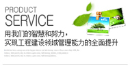

联系我们

硬件产品 >
云计算虚拟化信息安全实训系统
云计算虚拟化信息安全实训系统产品是对于安全人才培养、安全研究等需求专门设计开发的产品，系统包含两部分：云计算虚拟化平台和教育培训管理平台。
云计算虚拟化技术，产品通过云计算虚拟化调度和管理为计算机教学虚拟各种实验操作环境。让学员进行各种计 算机、网络设备和安全设备等实际操作，了解计算机、网络设备和安全设备原理，掌握计算机系统、网络和安全信息知识和实际操作技能，真实体验计算机系统、网络和安全信息知识和实际操作演练过程。
一、应用场景
局域网是目前广泛应用于酒店、学校、企业、政府等区域的计算机网络。 虽然局域网结构简单，部署方便，应用范围广，同时也伴随大量令人头疼的问题，比如广播风暴、ARP欺骗、交换机端口故障等等。LAN Touch手持式网络故障检测仪可自动诊断，发现、检测这些网络问题，给您的网络带来细心的呵护，解决那些令人头疼的问题……